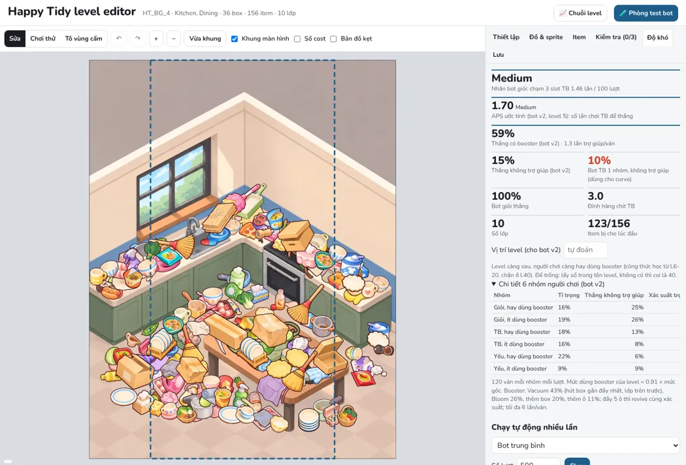
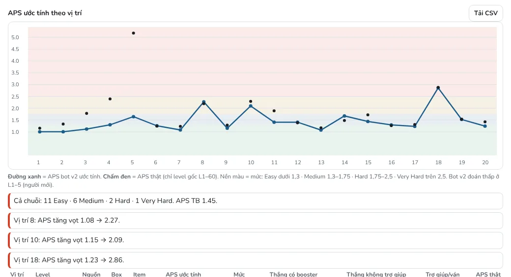

Hướng dẫn sử dụng
Cách dùng tool tạo level (bản 15) và tool test độ khó: gen level theo đường cong độ khó, cho bot v2 ước tính APS, xếp chuỗi level, rồi cho người thật chơi thử.
1. Mở tool và lưu dữ liệu
Từ trang chủ bấm Mở tool tạo level hoặc Mở tool test độ khó. Dùng Chrome hoặc Edge trên máy tính.
| Dữ liệu | Nằm ở đâu | Muốn chia sẻ thì |
|---|---|---|
| Level đang làm dở | Tự lưu trong trình duyệt | Tab Lưu → Tải file về máy |
| Thư viện level | Trình duyệt | Tải JSON từng level, gửi file |
| Danh sách level cho người test | File playtest-levels.json trên web | Xem phần 7 |
| Kết quả người test | Trình duyệt của người test | Người test tải file kết quả, gửi designer nhập vào |
2. Màn hình editor

Thanh công cụ trên map
| Nút | Làm gì |
|---|---|
| Sửa | Chọn, kéo, xoay, phóng, lật, đổi lớp item |
| Chơi thử | Tự chơi hoặc xem bot chơi; "Xem lại 1 lượt" để tua từng tap |
| Tô vùng cấm | Tô chỗ không được đặt đồ (tường, cửa sổ…) |
| ↶ ↷ | Undo / Redo |
| + −, Vừa khung | Zoom map |
| Khung màn hình | Viền vùng người chơi thấy (rộng 1218 / 1485 / 1980 px) |
| Số cost | Hiện số item phải đẩy vào hàng chờ, ngay trên map |
| Bản đồ kẹt | Chấm đỏ = item cần mà vẫn bị che lúc bot thua; vòng cam = item bot hay bấm nhầm |
Các tab
| Tab | Làm gì |
|---|---|
| Thiết lập | Map, tên level, tỉ lệ che, bảng box, thêm nhiều box, đường cong độ khó, Tự xếp |
| Đồ & sprite | Chọn sprite cụ thể cho từng item, random lại |
| Item | Danh sách item theo box, khoá / mở khoá |
| Kiểm tra | Báo lỗi: item nằm vùng cấm, ngoài map, sai số lượng… |
| Độ khó | Nhãn bot giỏi, APS ước tính, bảng từng box, 6 nhóm người chơi |
| Lưu | Level mới, thư viện, tải / mở file JSON, mở level thật L1–60 |
3. Tạo 1 level mới
Trước khi làm, chọn mức cho level theo nhịp của chuỗi (xem phần 5).
- Tạo level: tab Lưu → Level mới → chọn map trong lưới ảnh. Đặt tên ở tab Thiết lập. Tên có số (ví dụ "Level 25") thì bot tự hiểu vị trí level.
- Tô vùng cấm nếu cần: bấm Tô vùng cấm, tô lên chỗ không được đặt đồ.
- Thêm box: tab Thiết lập → "Thêm nhiều box cùng category". Chọn category bằng hình, nhập số box và tổng số item → Thêm các box. Tool chia đều 3–6 món mỗi box (ví dụ 14 món, 3 box → 5, 5, 4). Chọn chỗ đặt: rải đều, thêm vào cuối hoặc chèn ngẫu nhiên.
- Nhãn cạnh category (ví dụ "TB 0.80") là tỉ lệ người chơi nhận ra món đó. Thấp = khó nhìn.
- Kéo số thứ tự để đổi chỗ box.
- Vẽ đường cong độ khó: bấm hoặc kéo trên biểu đồ để đặt Easy / Normal / Hard / Super hard cho từng box. Cột tím là mục tiêu, nghĩa là bot giỏi phải đẩy 0 / 1 / 2 / 3 món vào hàng chờ ở box đó. Gợi ý: đỉnh ở khoảng 75% level, sau mỗi đỉnh là 2–3 box Easy.
- Khoá món muốn giữ: món khoá có viền xanh đậm và 🔒. Chọn sprite bằng tay sẽ tự khoá món đó.
- Chọn bố cục ban đầu (ô cạnh nút Tự xếp):
Mẫu Trông thế nào Hợp với Từ bố cục hiện tại Giữ chỗ hiện có, chỉ chỉnh thêm Sửa level đã có Rải đều cả map Đồ rải khắp map, ít lớp Easy, Medium Chồng cao 3–4 đống Vài đống dày, nhiều lớp Hard trở lên Gom cụm theo box Đồ cùng box nằm gần nhau Medium Dồn giữa màn hình Tập trung trong khung màn hình hẹp Medium, Hard - Chọn APS mục tiêu cả level: Easy, Medium, Hard, Very Hard, hoặc tự nhập khoảng. Chọn "Không kiểm" nếu chỉ muốn bám cột tím.
- Bấm Tự xếp. Tool dời chỗ và đổi lớp các món chưa khoá. Bot giỏi chấm từng box theo cột tím. Cứ khoảng 1/10 số lần thử, bot v2 đo APS: dễ quá thì tool nâng đều mức các box, khó quá thì hạ xuống. "Số lần thử" 3000 mất khoảng 15–30 giây. Không ưng thì bấm Undo.
- Đọc dòng kết quả dưới nút: APS bot v2, có trong khoảng mục tiêu không, tool đã nâng hay hạ mức box bao nhiêu, box nào còn lệch. Chưa đạt thì bấm Tự xếp thêm lần nữa, hoặc tăng số lần thử.
- Sửa tay nếu cần, rồi xem tab Độ khó (phần 4). Tab Kiểm tra phải về 0 lỗi.
- Lưu vào thư viện và tải file về máy (phần 6).
4. Đo độ khó
Mỗi lần sửa level, bot tự chạy lại trong khoảng nửa giây. Kết quả ở tab Độ khó.
| Số liệu | Ý nghĩa |
|---|---|
| APS ước tính | Số lần chơi trung bình để thắng 1 lần, theo bot v2 (6 nhóm người chơi, có dùng booster). Đây là số chính để chốt level. |
| Thắng có booster / không trợ giúp | Tỉ lệ thắng của bot v2 khi được và không được dùng booster |
| Trợ giúp / ván | Số lần dùng booster hoặc Revive mỗi ván |
| Nhãn bot giỏi | Theo số lần hàng chờ chạm 3 ô: Easy < 0,4 · Medium 0,4–2 · Hard ≥ 2. Cho biết độ khó do xếp lớp. |
| Bảng từng box | Số món vào hàng chờ so với mục tiêu; box lệch hiện màu đỏ |
| Chi tiết 6 nhóm | Giỏi / TB / yếu × hay / ít dùng booster: tỉ trọng, tỉ lệ thắng, mức dùng trợ giúp |
Ô "Vị trí level": level càng về sau người chơi càng hay dùng booster, nên bot cần biết level đứng thứ mấy. Để trống thì tool lấy số trong tên level, không có số thì coi là 40.
Cách đọc nhanh: nhãn bot giỏi cao là khó vì xếp lớp. Bot giỏi thấp mà APS cao là khó vì món khó nhìn, dễ gây cảm giác "khó vô lý".
Phòng test bot (nhiều level một lúc)
- Bấm 🧪 Phòng test bot.
- Chọn level: level đang mở, thư viện, level thật của game (có nút chọn hết), hoặc nhiều file JSON từ máy.
- Đặt số lượt cho bot → Chạy test.
- Xem bảng: APS ước tính, thắng có booster, trợ giúp mỗi ván, nhãn bot giỏi, box hay thua. Bấm tên level để mở trong editor.
- Tải CSV (mở bằng Excel) hoặc JSON (có chi tiết từng box và từng nhóm).
5. Chuỗi level

- Bấm 📈 Chuỗi level ở góc trên editor.
- Thêm level: level đang mở, từ thư viện, level thật của game, hoặc cả một đoạn (ví dụ L1 đến L20).
- Sắp thứ tự bằng nút ↑ ↓, bỏ bằng ✕. Đặt "Level đầu chuỗi ở vị trí" nếu chuỗi không bắt đầu từ L1.
- Bấm Đo cả chuỗi. Bot v2 đo APS từng level ở đúng vị trí của nó.
- Xem biểu đồ và cảnh báo: 2 level Hard trở lên liền nhau, hoặc APS tăng vọt từ 0,8 trở lên. Tải CSV nếu cần.
6. Lưu và xuất Unity
Tất cả ở tab Lưu.
- Lưu vào thư viện: lưu cùng tên thì ghi đè. Thư viện chỉ nằm trong trình duyệt của máy này.
- Tải file về máy: ra file JSON đúng định dạng level Unity, gửi dev hoặc bỏ vào
Assets/_Game/Resources/Levels/. - Mở file từ máy: nạp file JSON có sẵn, của editor hoặc của Unity.
- Level thật: L1–60 của game (kèm bản _A/_B) để mở xem hoặc làm bản sao.
- Bản đang làm dở tự lưu; tắt tool mở lại vẫn còn.
Về file JSON: trường diff trong order là mức box 0/1/2/3 = Easy / Normal / Hard / Super hard, chỉ để designer xem. Khoá editorMeta (nhãn, vùng cấm, món khoá) được Unity bỏ qua, nên file vẫn nạp vào game bình thường.
7. Cho người chơi thử
Designer chuẩn bị
- Mở
playtest.html?admin=1(có?admin=1mới thấy tab Quản lý level). - Tab Quản lý level: thêm file JSON tải từ editor, hoặc level thật của game. Đặt nhãn muốn (Dễ / Vừa / Khó / Rất khó), vị trí level, bật hoặc tắt từng level.
- Bấm Tải playtest-levels.json, rồi thay file cùng tên trong GitHub repo (Add file → Upload files). Khoảng 1 phút sau, người test mở link sẽ thấy danh sách mới.
- Gửi người test link
playtest.html(không có?admin=1).
Người test chơi
- Nhập tên, chọn level, chơi đủ 5 ván mỗi level. Không có booster; hàng chờ đầy thì được Revive tối đa 2 lần.
- Sau mỗi ván trả lời "Có muốn chơi lại không".
- Chơi xong, ở màn danh sách bấm Tải file kết quả và gửi file cho designer.
Designer xem kết quả
- Tab Kết quả → Nhập file kết quả, chọn một hoặc nhiều file của người test.
- Xem từng level: nhãn đo so với nhãn muốn, tỉ lệ thắng không Revive, điểm suýt thua (10 / 7 / 3 / 2 / 0), đánh giá "khó tốt" hoặc "dễ tốt".
- Tab Bot chơi: cho bot v2 chơi cùng luật để so với người. Nút 👁 xem bot chơi từng bước.
- Tải CSV toàn bộ ván chơi nếu cần phân tích thêm.
8. Lỗi hay gặp, giới hạn
| Hiện tượng | Lý do | Cách xử lý |
|---|---|---|
| Kéo cột tím mà đường bot không đổi | Cột tím chỉ là mục tiêu | Bấm Tự xếp |
| Tự xếp xong APS vẫn ngoài khoảng | Bố cục ban đầu quá dày (chồng cao, dồn giữa) hoặc quá ít lần thử | Tự xếp thêm lần nữa, tăng số lần thử, hoặc đổi sang "Rải đều" |
| Box khó vẫn thấp | Nhiều box khó liền nhau làm đầy hàng chờ; món trong hàng chờ tự lấp box sau; cùng category nằm lộ chỗ khác | Xen box Easy giữa các đỉnh; đổi category |
| Món khoá nằm trong vùng cấm | Tool không dời món khoá | Tab Kiểm tra báo đỏ, kéo tay ra |
| Người test không thấy level | Chưa thay playtest-levels.json trên repo, hoặc trình duyệt còn bản cũ | Upload file mới, đợi 1 phút, tải lại trang |
| Thư viện level trống ở máy khác | Thư viện chỉ lưu trong trình duyệt | Dùng file JSON để chuyển level |
Giới hạn đã biết
- Bot v2 đoán L1–5 dễ hơn thật nhiều (L5 thật 5,18, bot 1,66). Level cho người mới cần playtest thêm.
- Sai số APS ước tính khoảng 0,10–0,13 trên L6–60.
- Mốc Easy / Normal / Hard / Super hard = 0 / 1 / 2 / 3 món vào hàng chờ mỗi box đang dùng tạm.
- Chưa có ảnh nền cho map của L41–60 (nền xám); kết quả bot không bị ảnh hưởng.
- Mã item có thể đổi khi game cập nhật asset. Game lên version mới thì cần cập nhật lại danh mục item.